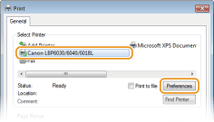
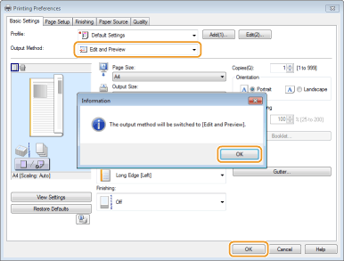
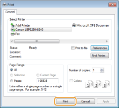
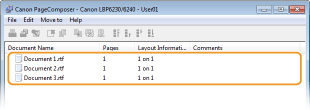
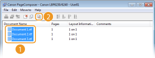
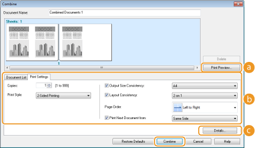
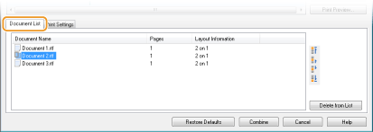
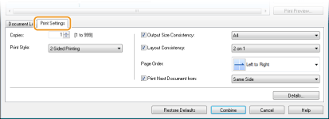
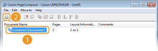

Combining and Printing Multiple Documents
 |
By using Canon PageComposer, you can combine multiple documents into one print job and print the job with specified print settings. For example, this function enables you to combine documents made with different applications and print all of the pages in the same paper size.
|
1
Open a document in an application and display the print dialog box.
How to display the print dialog box differs for each application. For more information, see the instruction manual for the application you are using.
2
Select this machine and click [Preferences] or [Properties].

3
Select [Edit and Preview] in [Output Method].
Click [OK] on the [Information] pop-up screen  Click [OK] in the printer driver screen.
Click [OK] in the printer driver screen.

4
Click [Print] or [OK].

 |
Canon PageComposer starts. Printing does not start in this step.
|
5
Repeat steps 1 to 4 for the documents you want to combine.
|
|
The documents are added in Canon PageComposer.
 |
6
From the [Document Name] list, select the documents to combine, and click .
To select multiple documents, click the documents while holding down the [SHIFT] key or [CTRL] key.

7
Change the settings as necessary, and click [Combine].
The documents selected in step 6 are combined.

 [Print Preview]
[Print Preview]Displays a preview of the document to be printed.
 [Document List]/[Print Settings]
[Document List]/[Print Settings]Click the [Document List] tab to display the documents added in steps 1 to 4. You can remove documents by selecting them in the list and clicking [Delete from List].

Click the [Print Settings] tab to display the screen for specifying print settings such as the number of copies. The settings specified here are applied to the whole print job.


For more information, click [Help] on the Canon PageComposer screen.
[Details]
Displays the print settings screen of the printer driver. There are fewer settings available than when using the ordinary printing method.
8
In the [Document Name] list, select the combined-document print job you want to print, and click .

|
|
Printing starts.
To cancel printing, see Canceling Print Jobs.
|